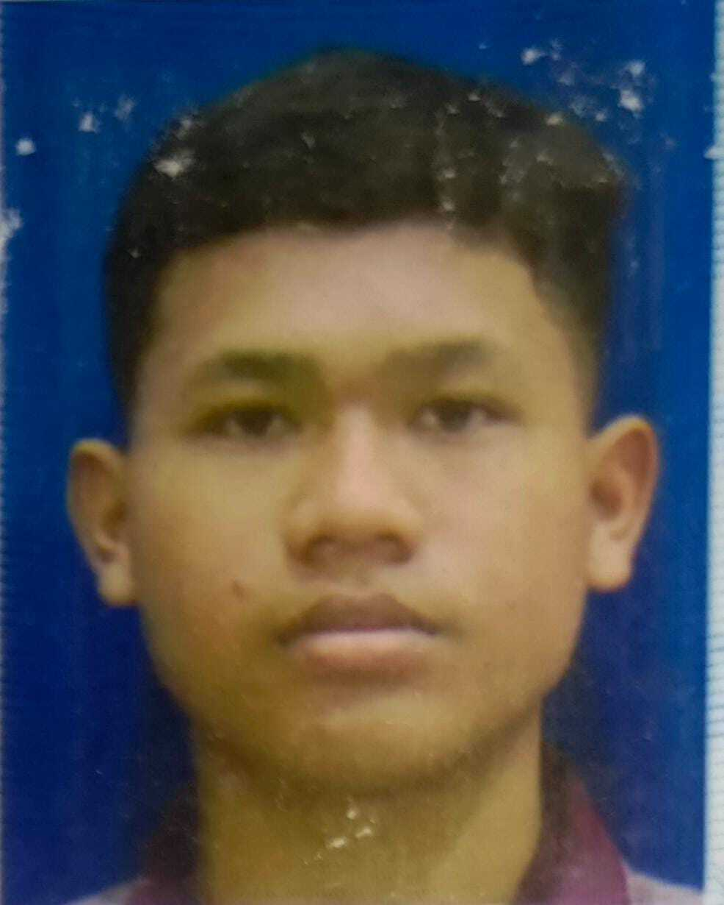

Mahasiswa Teknik Informatika

Saya adalah seorang mahasiswa aktif Teknik Informatika yang memiliki ketertarikan tinggi pada pengembangan perangkat lunak, algoritma, serta teknologi web. Di samping fokus mendalami ilmu akademis dan pemrograman, saya menyukai tantangan yang menguji kemampuan pemecahan masalah (problem-solving), logika, serta strategi melalui kompetisi game online.
2025 — Sekarang
2022 - 2025
Fokus pada pemrograman web, Memahami komponen hardware, dan pengembangan perangkat lunak.
2019 - 2022
2013 - 2019